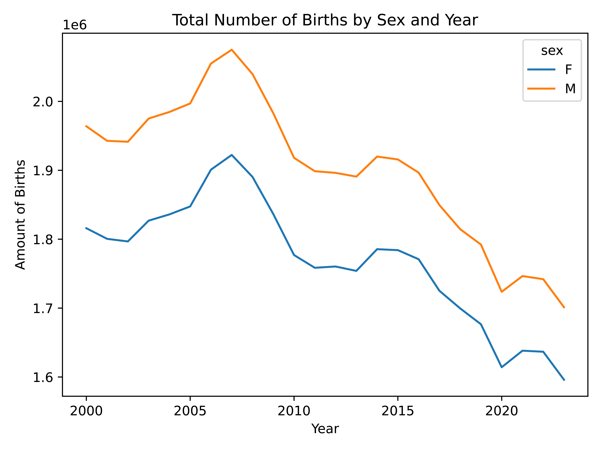
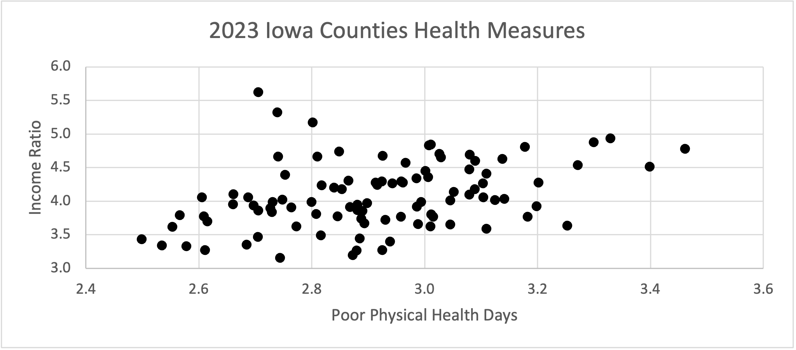
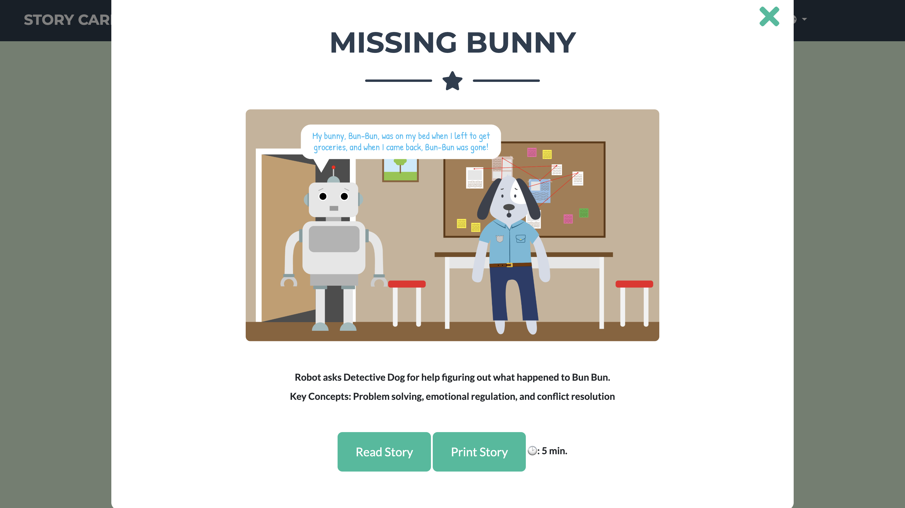
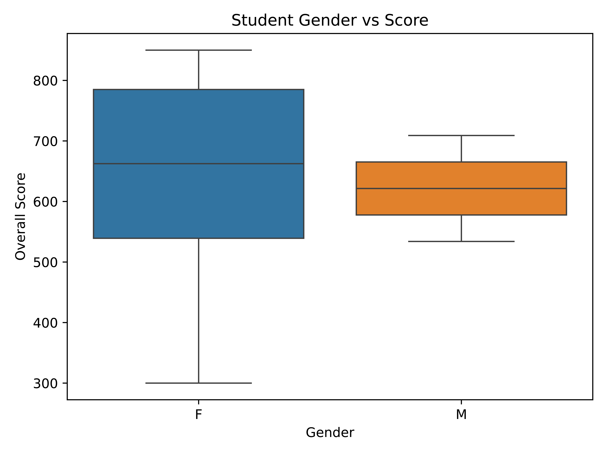
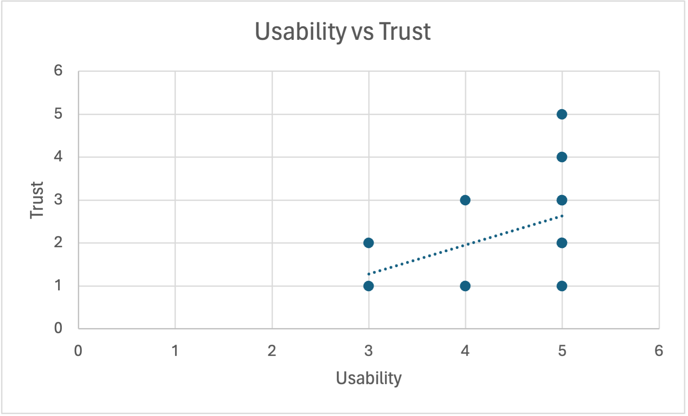

Meredith Onions
Home
Data Work
Web Projects
Graphic Design
About Me
Data Work

Visualizations of SSA Data with Matplotlib and pandas

Analyzing Public Data in Microsoft Excel
Analysis of Tornado Tracks with Attribute Queries in ArcGIS
Analyzing ER Visits with ArcGIS

Working with Data in the Cloud
Tracking Bigfoot Sightings in ArcGIS

Removing Outliers with Seaborn

Conducting a Survey and Reviewing Results in Excel
Plotting FEC Donation Data with Matplotlib
Reading, Filtering, and Visualizing an IMDb Dataset with JavaScript